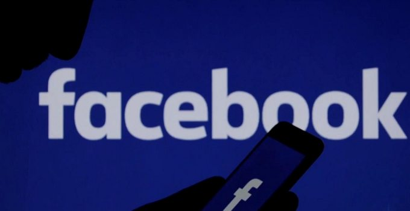

Melalui situs jejaring facebook, seseorang dapat mengunggah berbagai informasi mengenai dirinya sehingga dapat dilihat oleh pengguna lain. Tidak hanya itu, pengguna facebook dapat membuat kata-kata yang disebut dengan status mengenai berbagai hal. Status yang dibagikan tersebut dapat dikomentari oleh pengguna lainnya. Walaupun demikian, belum banyak orang yang mengetahui definisi facebook, sejarah serta manfaat dari facebook itu sendiri.
Oleh karena itu, melalui artikel kali ini kami akan membahas lebih detail mengenai definisi facebook itu sendiri, sejarah diciptakannya facebook sampai manfaat dari facebook. Kami berharap dengan artikel ini, para pengguna dapat menggunakan facebook dengan baik dan sesuai aturan. Berikut pembahasan mengenai pengertian facebook secara detail.
Di Indonesia, jumlah pengguna facebook aktif bulanan mencapai 77 juta. Dengan demikian, Facebook adalah jejaring sosial yang digemari dan menjamur di kalangan masyarakat Indonesia. Namun, jika ditanya mengenai definisi dari facebook, maka hanya sebagian orang saja yang mengerti definisi facebook itu. Lantas, apakah definisi dari facebook? Jika dilihat dari kata “Facebook” terdiri dari dua frasa dalam bahasa inggris. Face yang berarti muka sedangkan book yang berarti buku. Sedangkan definisi facebook secara lengkap adalah sebuah situs jejaring sosial yang memungkinkan pengguna dapat saling berinteraksi dengan pengguna lainnya di seluruh dunia. Frasa “Buku Muka” merupakan prinsip dasar yang membedakan facebook dengan jejaring sosialnya, yaitu menampilkan seluruh informasi dari pengguna tersebut.
Facebook menawarkan berbagai fitur canggih yang belum pernah ada di sosial media sebelumnya. Selain dapat bertukar pesan, dengan facebook seorang pengguna dapat menciptakan halaman pribadi, menambahkan teman, membuat dan mengupdate status, membagikan berbagai jenis konten, video call dan banyak lagi. Selain itu, facebook juga dilengkapi dengan alat privasi untuk membatasi siapa saja yang berhak melihat hal yang Anda bagikan.
Mendengar kata “Facebook” sudah tidak asing lagi bagi setiap orang yang menggunakan internet. Facebook menjadi salah satu sosial media yang paling populer dan digemari banyak orang di seluruh dunia. Dari anak-anak, pejabat bahkan orangtua sudah menggunakan facebook. Kebanyakan dari mereka memakai facebook untuk menjalin pertemanan dan berkomunikasi dengan banyak orang, baik itu saudara, teman dekat bahkan teman jauh. Kalau dahulu kita pernah mengenal Friendster, maka facebook diluncurkan dengan kegunaan dan fungsi yang sama, hanya saja facebook dilengkapi dengan berbagai fitur canggih sehingga kini Friendster sudah jarang digunakan oleh masyarakat. Selain itu, karena kepopuleran yang diraih facebook maka facebook dikatakan menjadi platform yang memicu munculnya aplikasi sosial media yang kita ketahui sampai sekarang, seperti BBM, Twitter, Instagram, WhatsApp dan lainnya.
Mark Zuckerberg mendirikan facebook saat ia belajar psikologi di Harvard University. Pada Februari 2004, Mark mendirikan Facebook, dimana nama itu berasal dari lembaran profil yang dibagikan kepada mahasiswa baru Harvard. Pada awalnya, facebook dikenalkan hanya untuk kalangan mahasiswa. Hal itu digunakan sebagai media perkenalan bagi para mahasiswa Harvard. Terdapat 1.200 mahasiswa Harvard yang telah mendaftar dalam waktu 24 jam. Selanjutnya jaringan diperluas ke universitas lainnya di Boston, Stanford University, Liga Ivy, hingga universitas lain yang terdapat di Amerika Serikat. Pada September 2005, situs ini menyebar ke universitas lainnya di seluruh dunia. Selain itu, banyak siswa menengah atas Amerika yang mendaftar di situs ini, hingga akhirnya facebook digunakan untuk semua orang yang berusia minimal 13 tahun. Hingga akhirnya pada 2006, jaringan itu melampaui lembaga pendidikan dengan menggunakan alamat email yang terdaftar. Namun, tahukah Anda bahwa situs ini mengalami perjalanan panjang hingga akhirnya menjadi Facebook seperti yang dikenal sekarang ini. Berikut akan kami jelaskan sejarah singkat mengenai facebook secara detail :
Tepat pada 23 Oktober 2003, yang merupakan titik awal bagi Mark Zuckerberg memulai eksperimen di dunia jejaring sosial dengan diciptakannya Facemash.com. Situs ini memungkinkan Anda untuk membandingkan dua gambar, dimana gambar itu diperoleh Mark dari database Harvard University. Namun pihak administrasi Harvard langsung mematikan server yang akan diteruskan karena Mark telah menembus keamanan kampus, melanggar hak cipta, melanggar hak individu sehingga Mark terancam dikeluarkan. Walaupun demikian, Mark kembali membuat proyek dengan mengunggah 500 lukisan ke situs tersebut, dimana setiap gambar dilengkapi dengan kolom komentar. Mark membuktikan bahwa orang suka melihat foto orang lain.
Untuk menghindari kesalahan dari Facemash.com, Mark pun mendaftarkan domain TheFacebook.com pada 24 Januari 2004. Mark berniat membuat situs web untuk menghubungkan mahasiswa di Harvard dengan memodelkan dari situs Friendster. Mark bersama teman-temannya Andrew McCollum, Dustin Moskovitz dan Chris Hughes yang merupakan mahasiswa Harvard University hanya memiliki waktu seminggu untuk menyelesaikan proyek itu. Hanya dalam waktu 24 jam, 1200 mahasiswa Harvard telah mendaftarkan diri ke situs tersebut.
Namun perjalanan Mark menyelesaikan proyek itu tidaklah mulus. Mark dituduh mencuri ide dari situs HarvardConnection.Com. Situs tersebut merupakan milik tiga senior Mark, yaitu Cameron Winklevoss, Tyler Winklevoss, dan Divya Narendra. Mark dan ketiga senior itu menyelesaikan masalah tersebut. TheFacebook.com terus dikembangkan hingga pada Desember 2004 jumlah pendaftar TheFacebook mencapai 1 juta anggota. TheFacebook.com telah berganti nama menjadi facebook.com pada Desember 2005 dengan nilai $200.000. Ditahun itu pula Facebook mendapatkan banyak investor dan bekerjasama dengan perusahaan, yakni Apple Inc. dan Microsoft Inc. Tepat 24 September 2006, facebook membuka pendaftaran kepada setiap orang yang berusia 13 Tahun.
Itulah sekilas mengenai sejarah dari situs Facebook.com. Perusahaan tersebut juga pernah mengalami penurunan di tahun-tahun berikutnya karena banyak mengalami kerugian. Walaupun demikian, facebook kembali berkembang hingga menjadi situs jejaring sosial yang mendunia dan dapat dinikmati oleh masyarakat Indonesia.
Seperti diketahui bahwa facebook telah menjadi situs jejaring sosial yang mendunia. Terdapat banyak manfaat yang diperoleh dari situs facebook.com. Berikut kami akan menjelaskan manfaat dari facebook menjadi beberapa aspek :
Manfaat yang dirasakan oleh setiap individu yang menggunakan facebook adalah sebagai tempat curhat, sebagai tempat penyaluran hobi, sebagai media hiburan, memperoleh informasi terbaru, mengisi waktu luang dan lainnya.
Facebook disebut juga dengan social networking, dimana facebook memberikan manfaat, yaitu sebagai media untuk berinteraksi dengan orang lain dari berbagai tempat, sebagai ajang untuk bertemu kawan lama, untuk menambah teman, sebagai tempat pertemuan orang yang memiliki hobi yang sama, sebagai tempat sharing berbagai konten dan masih banyak lagi.
Facebook juga menjadi salah satu media e-commerce, dimana menjadi tempat untuk mempromosikan suatu produk. Caranya pun begitu mudah untuk dilakukan, seperti memberikan foto produk yang akan dijual atau memasang iklan untuk mencari mitra bisnis.
Saat ini, dunia politik sudah mulai transparan dan terbuka. Semua masyarakat dapat memberikan suara atau menulis apapun untuk menarik simpati orang lain.
Itulah pembahasan lengkap mengenai pengertian facebook, sejarah beserta manfaatnya. Dengan adanya facebook kita semakin mudah untuk berinteraksi dan mengemukakan pendapat. Oleh karena itu, diperlukan pemahaman masyarakat untuk menggunakan facebook ke arah yang lebih positif.